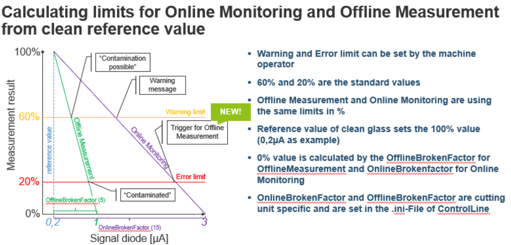
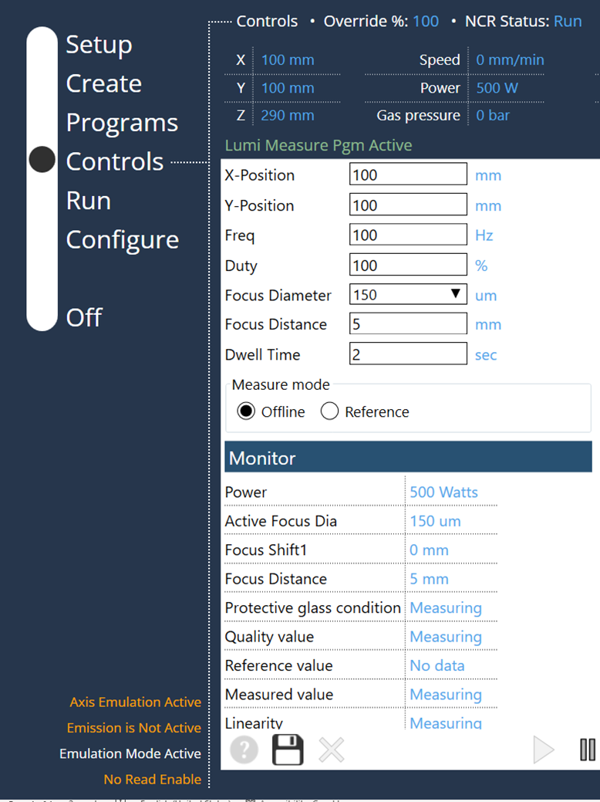
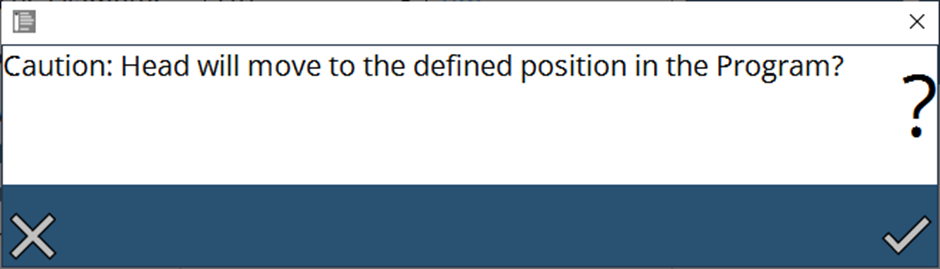
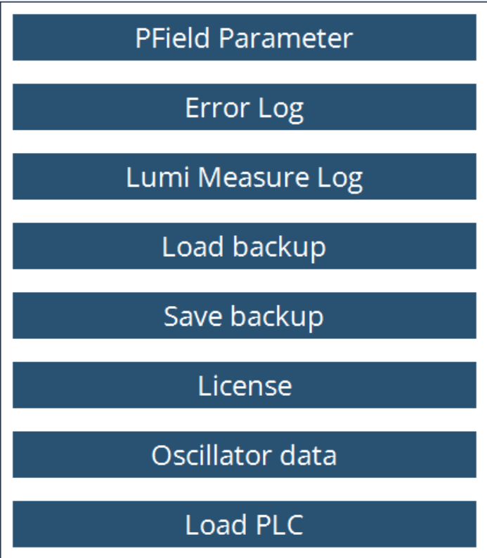
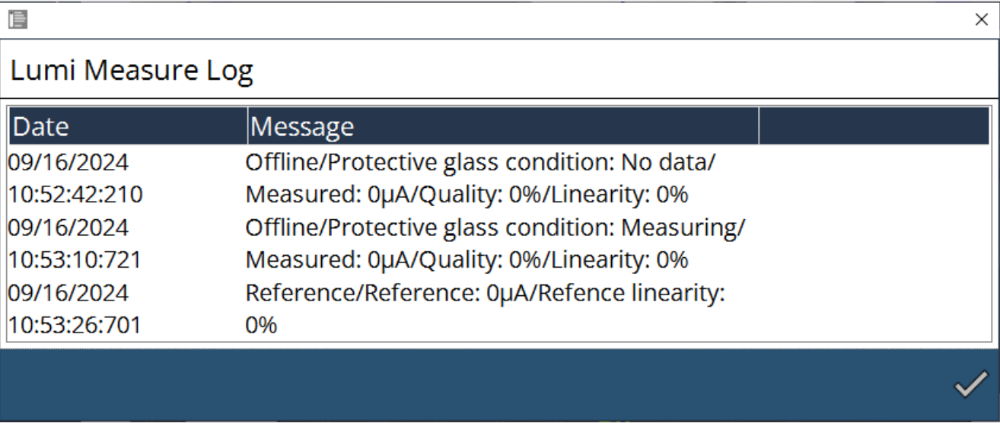
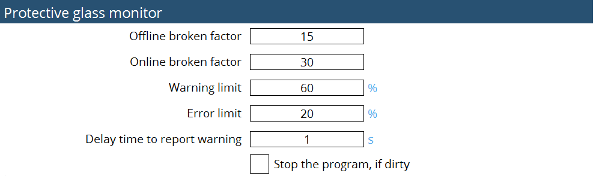

Protective Glass Monitoring
Parametrization
The protective glass monitoring is a system that monitors the condition of the protective glass. It could prevent you to produce parts of low quality or even machine damage.
The behavior is defined as follows :
-
When the quality value of the protective glass is lower than the error level during cutting: The machine will stop processing, the beam will turn off, and a window will pop up on the front of the HMI.
-
If the Close button on the window is clicked, the machine will continue cutting the current sheet. Before processing the next sheet, it will perform a protective glass measurement. If the quality is still below the error level, the window will pop up again. Clicking "Close" will allow the machine to continue processing, and the window will appear again at the end of the sheet.
-
If the glass is contaminated from the beginning, after cutting the first contour, the machine will stop and perform a protective glass measurement. If the quality is below the error level, a window will pop up. Clicking the Close button will allow the machine to continue cutting the current sheet.
There is offline measurement and a online measurement possible :
| Offline Measurement | Online Monitoring | |
|---|---|---|
Measurement type |
Fixed measurement conditions |
In situ measurement |
Triggers |
Relative limit to clean reference value |
Relative limit to clean reference value |
Effect |
Result in percent |
Reaction at contour end |
Purpose |
Prevents production of material scrap |
Triggers offline measurement |
Offline Measurement : Offline measurement is used to check the glass quality under stable conditions. During offline measurement, three different levels of laser power are emitted, each for a specific time period — typically 500 ms. The reflected light from the glass is measured at each power level, and the normalized reflection luminosity is calculated and compared with a reference value, which is obtained using the same method. An offline broken factor is also involved in this calculation to determine the glass quality. For the same reflection luminosity value, a higher broken factor indicates better glass quality. Therefore, only when the glass is significantly dirty will a warning or error be triggered.
Online Monitoring : Online measurement is used to check the glass quality during cutting. Whenever there is laser output, the average value of the reflected light over a time period is calculated, and a low-pass filter is applied to this value. Due to the unstable nature of the laser output and back reflection from the cutting sheet, the online value is significantly higher than the offline one.
The parametrization is done in the setting page :

Luminosity measurement
The protective window measurement is based on a luminosity measurement. If condition is Clean, protective window status is good to proceed with cutting in terms of good cutting results. If condition is Contaminated, protective window status is poor and its advisable to change the protective window to experience good cutting results.

Depending on the result of quality value percentage, clean or replace the protective glass.
-
80%-90% → clean
-
< 80% → replace

With the above entries, X and Y axis moves towards the positioned value.

Running the program will follow the data of frequency and duty as per the user requirement. Power parameter is pre-defined as step up of 500W, 1000W and 1500W.
Focus diameter, Focus distance and dwell time also has been modified according to the user requirements. Entered values can be monitored when the program runs. The specified Dwell time will hold the program and then abort the program.
Measure mode has offline and reference data. In offline selection, user can run the program and check the status of protective window. In reference selection, user can cross verify the data and values of quality and linearity and it can be saved using save option. Generally, reference selection will be opted when the protective window is newer which gives fine set of results.
When lumi measure program runs, it takes the log of the data and it can be read
in LumiMeasurelog.txt from the path
C:\ProgramData\Metamation{APPNAME}\Log\Currentyear\Currentmonth\Currentday or
in the UI.


With reference to the above calculation, the following parameters will be added in the MK file to optimize the monitoring function :
-
Offline broken factor
-
Online broken factor
-
Warning limit in percentage
-
Error limit in percentage
-
Delay time in secs to report warning
